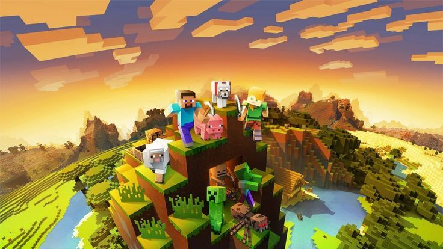

GOD OF WAR
É uma renomada série de videogames de ação e aventura desenvolvida pela Santa Monica Studio e publicada pela Sony Interactive Entertainment. A série é centrada no personagem Kratos, um ex-deus da guerra da mitologia grega, que busca vingança contra os deuses que o traíram, enfrentando uma série de inimigos mitológicos e passando por diversas aventuras.
A franquia começou em 2005, com o primeiro jogo ambientado na mitologia grega, onde Kratos enfrenta uma série de deuses e criaturas, culminando em sua luta contra Zeus, o líder dos deuses do Olimpo. Ao longo dos jogos, Kratos se envolve em batalhas épicas e utiliza armas como as **Espadas do Caos** para derrotar seus inimigos.
Nos jogos mais recentes, como **God of War (2018)**, a história se desloca para a mitologia nórdica, com Kratos vivendo uma vida mais isolada, agora acompanhado de seu filho Atreus. O jogo apresenta uma jogabilidade mais focada em narrativa, com o relacionamento entre pai e filho sendo um tema central. Kratos precisa enfrentar deuses e criaturas nórdicas, como Baldur, Freya, e outros, enquanto lida com seu passado violento e tenta educar seu filho para evitar os mesmos erros.
A série é reconhecida por sua jogabilidade dinâmica, narrativa envolvente e gráficos impressionantes. Ela foi muito bem recebida pela crítica e conquistou uma base de fãs leal ao longo dos anos.
GRAND THEFT AUTO
Grand Theft Auto (GTA) é uma famosa série de jogos de ação e aventura desenvolvida pela Rockstar Games. Lançada inicialmente em 1997, a franquia se tornou um ícone da indústria de videogames, conhecida pela sua jogabilidade em mundo aberto e narrativa envolvente. Em cada título, o jogador assume o papel de um criminoso, realizando uma variedade de missões que incluem furtos, perseguições e confrontos violentos, enquanto explora vastas cidades fictícias inspiradas em lugares reais.
Os jogos são conhecidos pela liberdade que oferecem, permitindo ao jogador escolher entre seguir a história principal ou se envolver em atividades paralelas, como dirigir, praticar esportes ou causar caos nas cidades. A série é famosa também por suas críticas sociais e sátiras, abordando temas como corrupção, violência e a cultura americana.
GTA III (2001) foi um marco, introduzindo a perspectiva em 3D e um mundo aberto totalmente interativo. Seguiram-se títulos como **GTA: Vice City** (2002), ambientado nos anos 80, e GTA: San Andreas** (2004), que expandiu ainda mais o mundo do jogo, com múltiplas cidades e uma rica história. GTA IV (2008) e **GTA V** (2013) continuaram a tradição de trazer mundos detalhados, gráficos avançados e narrativas profundas.
GTA V se destaca por sua imersão em uma Los Santos inspirada em Los Angeles, com três protagonistas jogáveis e um modo online expansivo, **GTA Online**, que permite aos jogadores criar personagens e interagir em um mundo dinâmico com outros jogadores. A série, com sua combinação de jogabilidade, narrativa e crítica social, continua sendo uma das mais bem-sucedidas e influentes franquias de videogames de todos os tempos.

READ DEAD REDEMPTION
**Red Dead Redemption (RDR)** é um jogo de ação-aventura desenvolvido pela Rockstar Games, lançado em 2010. Ambientado no fim do século XIX, ele transporta os jogadores para um vasto e imersivo mundo aberto inspirado no Velho Oeste americano. A história segue John Marston, um ex-criminoso que é forçado a caçar os antigos membros de sua gangue para salvar sua família, que está sendo mantida refém pelo governo. O jogo é conhecido por sua narrativa profunda, personagens memoráveis e cenários deslumbrantes, que capturam a essência do Oeste Selvagem.
A jogabilidade é focada em exploração, tiroteios, missões e interações com o ambiente, com o jogador podendo caçar, pescar, montar cavalos e até interagir com NPCs de maneiras que afetam o progresso do jogo. A mecânica de combate utiliza o sistema de "Dead Eye", que permite desacelerar o tempo para realizar tiros precisos. O mundo de *Red Dead Redemption* é dinâmico e reativo, com mudanças no clima, ciclo de dia e noite e eventos que acontecem enquanto o jogador explora.
A missão central do jogo envolve Marston caçando seus antigos amigos, mas o enredo também se expande para temas como redenção, lealdade e os conflitos entre o progresso e a natureza selvagem. O jogo foi amplamente aclamado pela crítica, recebendo prêmios por sua direção de arte, história e inovações em mecânicas de jogo. *Red Dead Redemption* também aborda a transição do país para a modernidade, com a chegada de tecnologias e novas leis que simbolizam o fim do "Velho Oeste".
MINECRAFT
**Minecraft** é um jogo de sandbox criado pela Mojang, lançado inicialmente em 2011, que se tornou um dos títulos mais populares de todos os tempos. No jogo, os jogadores exploram um mundo gerado proceduralmente, composto por blocos que representam diversos materiais, como terra, pedra, madeira e minerais. O objetivo é criar, explorar e sobreviver, sem um enredo linear, o que permite uma enorme liberdade criativa.
Em *Minecraft*, o jogador pode escolher entre diferentes modos de jogo, como o **Modo Sobrevivência**, onde precisa coletar recursos, construir abrigo e combater criaturas perigosas, e o **Modo Criativo**, onde tem acesso ilimitado a todos os recursos do jogo para construir sem limitações. Além disso, o **Modo Aventura** foi criado para mapas personalizados, e o **Modo Espectador** permite observar o mundo sem interagir com ele.
O jogo é conhecido por sua estética simples, com gráficos em blocos, mas sua jogabilidade profunda e a possibilidade de construir estruturas complexas atraem milhões de jogadores de todas as idades. A constante atualização do jogo, com novos conteúdos como blocos, mobs (criaturas), e dimensões adicionais, mantém a comunidade engajada.
A possibilidade de jogar de forma cooperativa ou competitiva com outros jogadores, seja em servidores públicos ou privados, também é um dos grandes atrativos. Além disso, a imensa comunidade de fãs cria mods, mapas personalizados e conteúdos, tornando *Minecraft* um jogo em constante evolução. Com sua simplicidade e profundidade, *Minecraft* continua a ser uma das experiências mais influentes e populares no mundo dos videogames.
